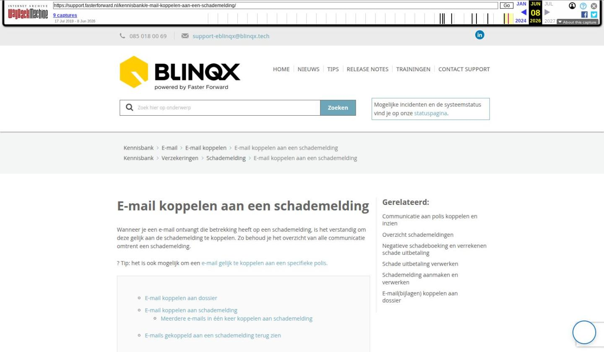

E-mail koppelen aan een schademelding

Tekstinhoud
E-mail koppelen aan een schademelding
Wanneer je een e-mail ontvangt die betrekking heeft op een schademelding, is het verstandig om deze gelijk aan de schademelding te koppelen. Zo behoud je het overzicht van alle communicatie omtrent een schademelding.
Tip: het is ook mogelijk om een e-mail gelijk te koppelen aan een specifieke polis.
E-mail koppelen aan dossier
E-mail koppelen aan schademelding
Meerdere e-mails in één keer koppelen aan schademelding
E-mails gekoppeld aan een schademelding terug zien
E-mail koppelen aan dossier
Indien het e-mailbericht niet automatisch gekoppeld is aan het dossier, dan klik je vanuit de e-mail op het koppelicoon en zoek het desbetreffende dossier. Klik vervolgens op de naam van het dossier. De producten onder dit dossier worden opgehaald. Ook staat er een oranje knop: 'Aan schademelding koppelen'. Klik hierop en selecteer de desbetreffende schademelding waar de e-mail aan gekoppeld moet worden.
Het is niet mogelijk om één e-mail aan meerdere dossiers en/of schademeldingen te koppelen.
E-mail koppelen aan schademelding
Indien de e-mail gekoppeld is aan een dossier, klik dan op het 'vlammetje' om de e-mail aan de schademelding te koppelen.
Je krijgt dan gelijk in de pop-up een overzicht van de schademeldingen in dat dossier te zien. Met het koppelicoon achter de desbetreffende schademelding kan de e-mail gekoppeld worden.
Meerdere e-mails in één keer koppelen aan schademelding
Het is mogelijk om vanuit de e-mailmodule meerdere e-mails in één keer aan een schademelding te koppelen. Je vinkt dan de checkbox aan voor de betreffende e-mails. Vervolgens klik je op het koppelicoon.
Dan klik je op de naam van het dossier. Je klikt op de knop 'Aan schademelding koppelen'. De beschikbare schademeldingen komen zichtbaar. Via het koppelicoon koppel je de e-mails aan de schademelding.
E-mails gekoppeld aan een schademelding terug zien
E-mails die gekoppeld zijn aan een schademelding worden standaard getoond onder de schademelding. Dit in het tabblad Schademelding – Communicatie – E-mail.
Deze e-mails worden niet standaard getoond onder het tabblad Communicatie – E-mail op dossier- of productniveau. Je zult dan in het filter moeten aangeven dat je de e-mails gekoppeld aan de schademelding wilt zien.
Laatste update: 9 december 2025
Was deze informatie nuttig?
Ja Nee